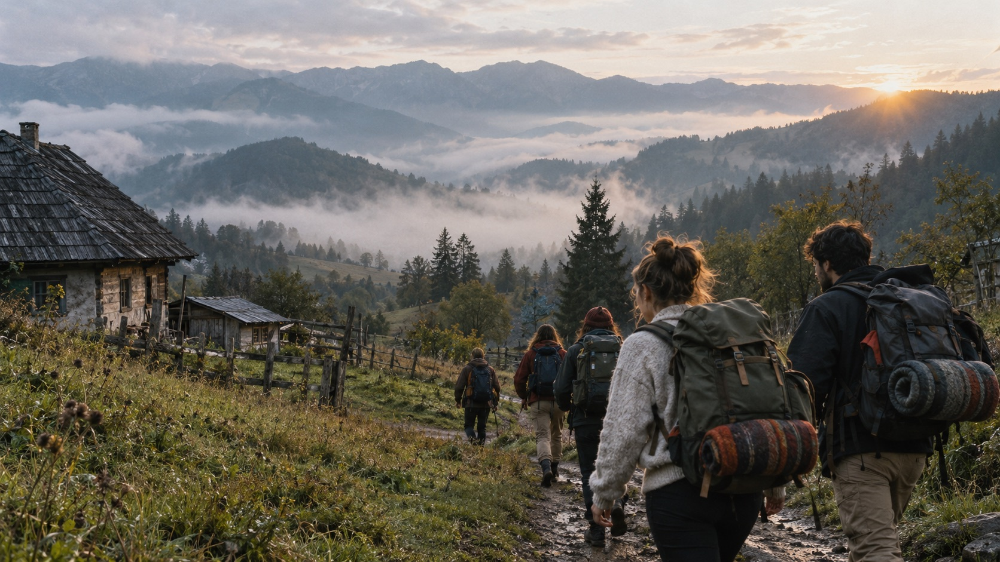
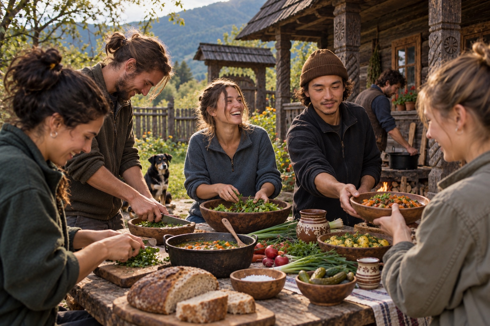
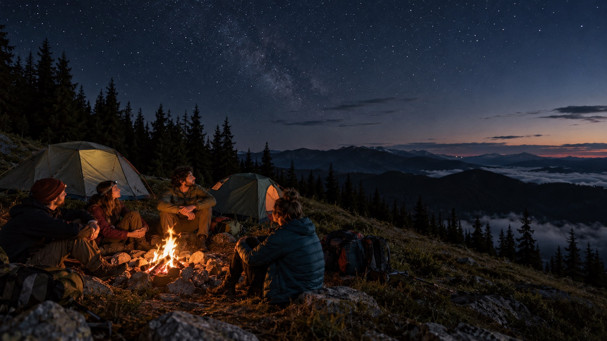

Digital reset
Move technology away from the centre of everyday life for a week and experience what changes when your phone is no longer the default place to turn.

Unplug to Reconnect presents
A one-week outdoor experience for young adults in a rural corner of the Romanian Carpathians.
The point
At 18–25, many of us are making some of our first big decisions about study, work, relationships, where we want to live, and what kind of life we want.
At the same time, much of what we see, hear, and compare ourselves with comes through a screen.
We don’t offer answers. We create a different environment where you might find your own direction, inspiration, or perspective through doing things, spending time in nature, and talking face-to-face with other people.
Your phone will survive a week without you.
Move technology away from the centre of everyday life for a week and experience what changes when your phone is no longer the default place to turn.
Hike, cook, camp, learn practical skills, take responsibility, and discover more of what you can do for yourself.
Live, work, eat, disagree, laugh, and spend time with a small group of people, face-to-face.
A typical day at camp
Every day will be a little different, but most follow the same simple structure. There is time to learn, time to help run the camp, and plenty of time when nothing is scheduled.
Eat breakfast together, drink coffee or tea, check the weather, and get ready for the day.
A practical session where we learn by doing, or a discussion and debate session where we explore a topic together.
A local cook prepares simple regional dishes with fresh ingredients, the kind of generous food a Romanian grandmother might put on the table. We eat together.
Read. Sleep. Walk. Play cards. Help in the garden. Talk. Sit somewhere. Have a ridiculous conversation or an important one. Learning to spend unstructured time without automatically reaching for a phone is part of the experience.
Everyone helps prepare dinner, clean up, and look after the camp.
After dinner come the campfire, games, music, conversations, and stars.

The morning workshop
Some mornings focus on practical skills, learning something by actually doing it.
Other mornings are discussion and debate workshops, a chance to explore a subject, hear different perspectives, ask questions, and form your own view.
The exact mix is not fixed. It depends on the participants, mentors, local people, and the place.
POSSIBLE PRACTICAL WORKSHOPS
Led by mentors, craftspeople, or local people with practical experience.
POSSIBLE DISCUSSION & DEBATE TOPICS
A mentor or moderator asks useful questions and creates space for different perspectives, not a “right” answer.
OUR ROLE: CREATE THE ENVIRONMENT / NOT DICTATE THE ANSWER

Leave from camp. On foot.
One of the defining experiences of the week is a one-night mountain expedition starting directly from camp.
We leave on foot carrying our backpacks, tents, sleeping bags, food, and equipment. We hike into the mountains, set up camp, cook, spend the evening outside, sleep there for the night, watch the sunrise, pack everything again, and walk back to base the next day.
No excursion bus. No drive to a tourist attraction. We start and finish on foot from camp.
This is a real challenge with intentional discomfort, but it is not survival training. Experienced leadership, proper planning, suitable equipment, and safety remain fundamental.
The week at a glance
Useful questions
Phones are stored safely for most of the week. There are designated opportunities to contact family and friends, and the camp remains reachable in an emergency.
No previous camping experience is expected. The week is built around learning by doing. Final fitness or participation requirements for the mountain expedition will be explained before applications open.
No. The mountain night is a planned outdoor challenge, not survival training. The camp provides proper hiking backpacks, reliable tents, sleeping bags suitable for temperatures around 0°C, and the necessary shared equipment.
Dates and pricing for the first pilot are not final yet. Join the pilot list and we will share the details when applications open.
No. English is the common language of the camp, but it does not need to be your first language. The point is to use English naturally while cooking, hiking, talking, and spending time together, not to speak perfectly.
The base camp uses simple outdoor accommodation in a rural setting, with tents and access to the basic facilities needed for the week. One night is spent camping in the mountains as part of the expedition. Exact accommodation details will be shared before booking.
Meals are part of the shared experience. Lunch is prepared fresh by a local cook, with an emphasis on simple food and local ingredients. We prepare dinner together. Dietary requirements and allergies will be collected during registration so the team can confirm what can be accommodated.
This starts small
The first camp will be small on purpose. Join the pilot list to hear when applications open and help shape what this becomes.